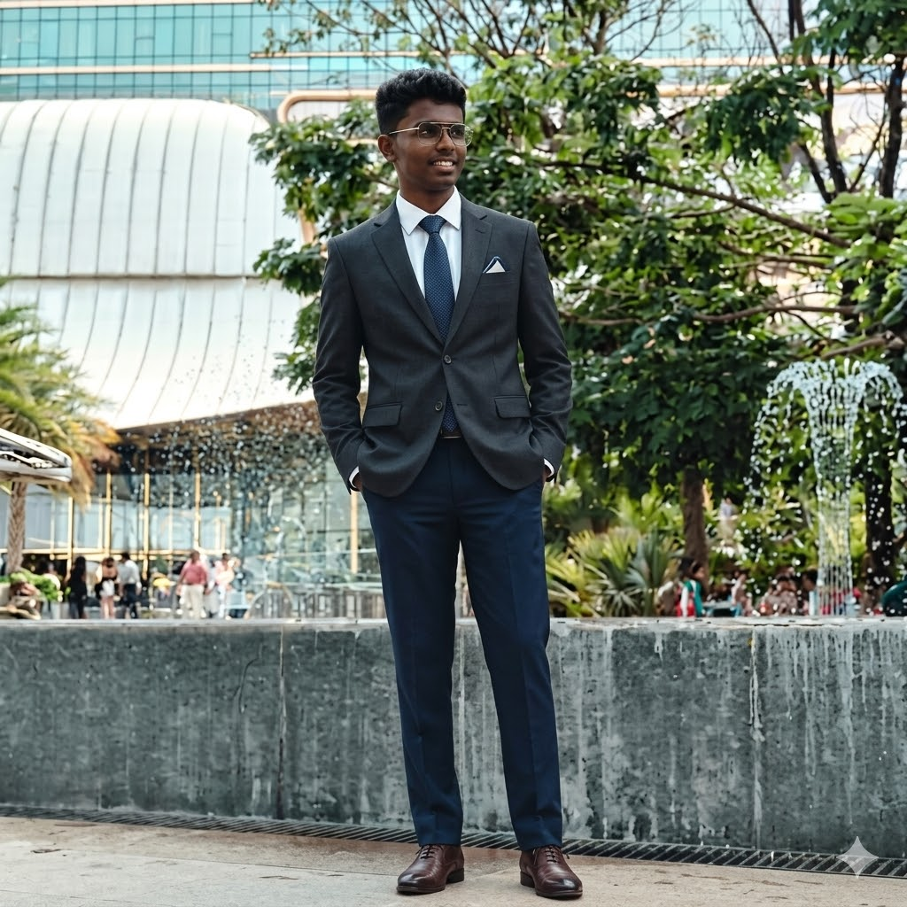

Hello, It's Me
Yashas T.R
And I'm a
Engineering performance-focused web and IoT solutions with clean architectures and responsive interfaces. Focused on bridging hardware with smooth software experiences.
Contact Me
Engineering performance-focused web and IoT solutions with clean architectures and responsive interfaces. Focused on bridging hardware with smooth software experiences.
Contact Me

I build intelligent, responsive systems leveraging modern technologies. From programming microcontrollers using C/C++ to designing beautiful web interfaces, I specialize in bringing complex concepts to life. My background includes extensive work with IoT, Arduino, and building clean, functional Python applications.
Currently pursuing my Engineering Degree, I am actively involved in robotics and automation projects, always looking to push the boundaries of what's possible with code and hardware.
Download CVI specialize in a triad of modern engineering disciplines. From creating highly interactive single-page web applications to wiring up smart IoT hardware and powering them with robust Python backends.
Hover over the interactive stack to explore my core service offerings.
View ProjectsNew
Python Backends
Data Flow & APIs
IoT-based automation saving energy via sensors.
Obstacle avoidance and remote monitoring bots.
Python data visualization desktop application.